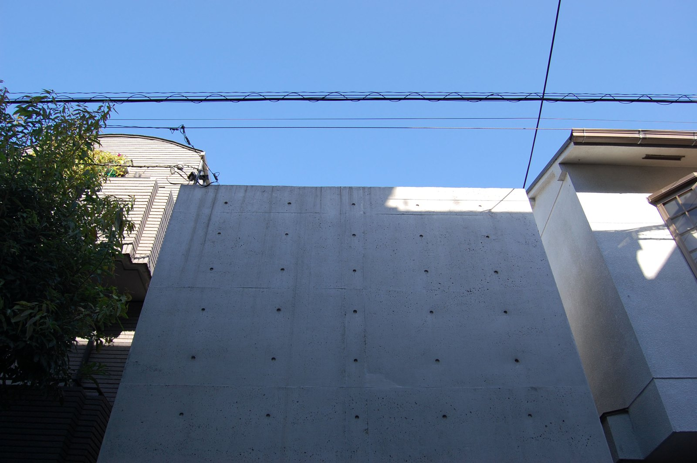
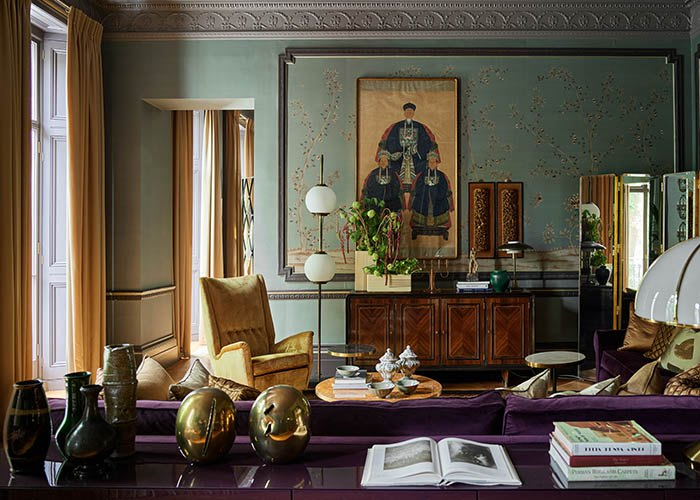
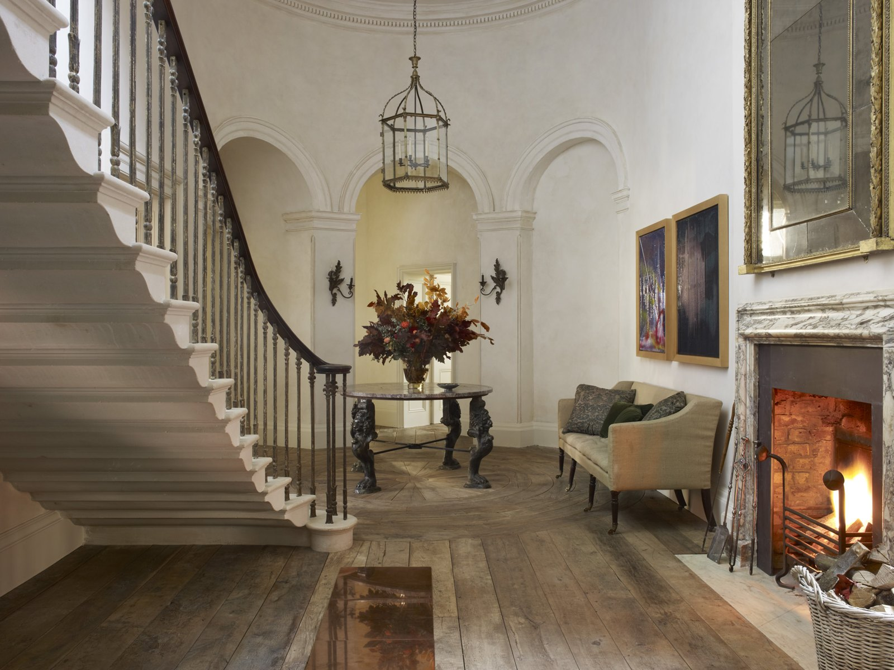
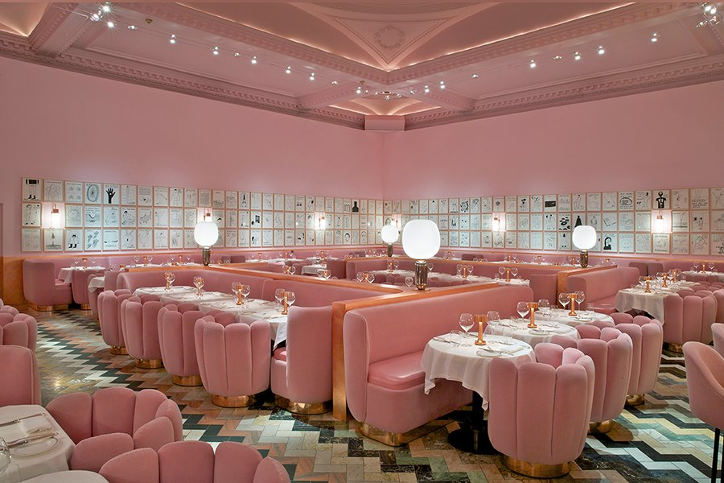

Bijoy Jain / Studio MumbaiElemental Tropical Regionalism（元素型熱帶地域主義）—— 讓水、風、光與手工構造共同決定空間，而非以風格覆蓋場所2026-08-10 · Vol.29
Bijoy Jain / Studio MumbaiElemental Tropical Regionalism（元素型熱帶地域主義）—— 讓水、風、光與手工構造共同決定空間，而非以風格覆蓋場所2026-08-10 · Vol.29 Peter ZumthorAtmospheric Materialism（氛圍材質主義）—— 空間不是靠造型被看見，而是靠材質厚度、明暗梯度與行走節奏被身體記住。2026-08-09 · Vol.28
Peter ZumthorAtmospheric Materialism（氛圍材質主義）—— 空間不是靠造型被看見，而是靠材質厚度、明暗梯度與行走節奏被身體記住。2026-08-09 · Vol.28
Tadao AndoSensory Concrete Minimalism（感官混凝土極簡主義）—— 封閉外界不是目的，而是讓光、風、雨與時間成為室內最強烈的內容。2026-08-07 · Vol.27
DimorestudioCinematic Historicism（電影式歷史拼貼）—— 歷史不是等待復刻的年代，而是可以重新剪接、調色與配樂的情緒素材。2026-08-06 · Vol.26 Studio ShamshiriNarrative Warm Modernism（敘事型暖現代）—— 以歷史研究為骨架、生活儀式為劇本，讓新介入看似早已存在。2026-08-03 · Vol.25Studio MK27Cinematic Tropical Modernism（電影感熱帶現代主義）—— 以水平框景、深簷陰影與可開合界面，把室內編排成一連串面向自然的鏡頭2026-08-02 · Vol.24
Studio ShamshiriNarrative Warm Modernism（敘事型暖現代）—— 以歷史研究為骨架、生活儀式為劇本，讓新介入看似早已存在。2026-08-03 · Vol.25Studio MK27Cinematic Tropical Modernism（電影感熱帶現代主義）—— 以水平框景、深簷陰影與可開合界面，把室內編排成一連串面向自然的鏡頭2026-08-02 · Vol.24 Space CopenhagenPoetic Modernism（詩意現代主義）—— 以材質老化、明暗對比與家具尺度，讓極簡空間保有情緒、記憶與社交溫度。2026-08-01 · Vol.23
Space CopenhagenPoetic Modernism（詩意現代主義）—— 以材質老化、明暗對比與家具尺度，讓極簡空間保有情緒、記憶與社交溫度。2026-08-01 · Vol.23
Rose UniackeQuiet English Restraint（英式靜奢）—— 用未經處理的自然材質與大量留白，讓古董與當代在光裡呼吸2026-07-26 · Vol.22
India MahdaviChromatic Maximalism（色彩極繁主義）—— 當這份名單上的極簡派把顏色抽乾，她反其道把整個房間浸進單一飽和色，讓色彩不再是點綴，而是建築本身2026-07-25 · Vol.21 David ThulstrupTactile Modernism（觸覺現代主義）—— 當「材料即裝飾」，設計師的工作是策展質感，而非堆疊風格2026-07-24 · Vol.20
David ThulstrupTactile Modernism（觸覺現代主義）—— 當「材料即裝飾」，設計師的工作是策展質感，而非堆疊風格2026-07-24 · Vol.20 Joseph DirandOrnamental Minimalism（裝飾性極簡主義）—— 用最貴的石材、最少的線條，把巴黎古典的比例翻譯成當代的靜默奢華。2026-07-23 · Vol.19
Joseph DirandOrnamental Minimalism（裝飾性極簡主義）—— 用最貴的石材、最少的線條，把巴黎古典的比例翻譯成當代的靜默奢華。2026-07-23 · Vol.19 Neri&Hu Design and Research OfficeNarrative Architecture（敘事式空間）—— 透過建築脈絡、材料真實性、框景與光影，讓住宅像一本可以被行走閱讀的故事。2026-07-22 · Vol.18
Neri&Hu Design and Research OfficeNarrative Architecture（敘事式空間）—— 透過建築脈絡、材料真實性、框景與光影，讓住宅像一本可以被行走閱讀的故事。2026-07-22 · Vol.18 Olson KundigArchitecture in Motion（會動的建築）—— 將結構、機械、景觀與室內融合，讓住宅能回應天候、光線與人的使用。2026-07-21 · Vol.17
Olson KundigArchitecture in Motion（會動的建築）—— 將結構、機械、景觀與室內融合，讓住宅能回應天候、光線與人的使用。2026-07-21 · Vol.17 Yabu PushelbergLayered Residence（層次住宅）—— 以電影式動線、層次光線與觸感材料，把住宅做成可停留、可記憶的日常場景。2026-07-20 · Vol.16
Yabu PushelbergLayered Residence（層次住宅）—— 以電影式動線、層次光線與觸感材料，把住宅做成可停留、可記憶的日常場景。2026-07-20 · Vol.16 Pierre YovanovitchCrafted French Modernism（手工法式現代）—— 以訂製家具、柔弧線條與藝術比例讓住宅在古典與當代之間保持張力。2026-07-19 · Vol.15
Pierre YovanovitchCrafted French Modernism（手工法式現代）—— 以訂製家具、柔弧線條與藝術比例讓住宅在古典與當代之間保持張力。2026-07-19 · Vol.15 Studio KOArchaic Modernism（粗獷考古現代）—— 把地方工藝、厚牆、陰影與克制家具組成不流行但耐久的住宅。2026-07-18 · Vol.14
Studio KOArchaic Modernism（粗獷考古現代）—— 把地方工藝、厚牆、陰影與克制家具組成不流行但耐久的住宅。2026-07-18 · Vol.14 Roman and WilliamsCinematic Domestic Heritage（電影感居家傳承）—— 以厚實木作、手工物件與昏暖光線建立像被時間拍過的住宅場景。2026-07-17 · Vol.13
Roman and WilliamsCinematic Domestic Heritage（電影感居家傳承）—— 以厚實木作、手工物件與昏暖光線建立像被時間拍過的住宅場景。2026-07-17 · Vol.13 Kelly WearstlerSculptural California Maximalism（雕塑感加州繁複）—— 用石材、圖案、古董與當代藝術把住宅變成有節奏的舞台。2026-07-16 · Vol.12
Kelly WearstlerSculptural California Maximalism（雕塑感加州繁複）—— 用石材、圖案、古董與當代藝術把住宅變成有節奏的舞台。2026-07-16 · Vol.12 John PawsonWarm Monastic Minimalism（溫暖修院極簡）—— 以光、空白、牆厚與少量材料創造近乎精神性的居住秩序。2026-07-15 · Vol.11
John PawsonWarm Monastic Minimalism（溫暖修院極簡）—— 以光、空白、牆厚與少量材料創造近乎精神性的居住秩序。2026-07-15 · Vol.11 StudioIlseHuman Sensory Warmth（人本感官溫度）—— 從坐感、觸感、聲音與日常儀式出發，而不是從造型開始。2026-07-14 · Vol.10
StudioIlseHuman Sensory Warmth（人本感官溫度）—— 從坐感、觸感、聲音與日常儀式出發，而不是從造型開始。2026-07-14 · Vol.10 Axel VervoordtWabi Industrial Antiquity（侘寂工業古意）—— 把時間、藝術與粗糙結構放進住宅，使新空間看起來像已經生活很久。2026-07-13 · Vol.9
Axel VervoordtWabi Industrial Antiquity（侘寂工業古意）—— 把時間、藝術與粗糙結構放進住宅，使新空間看起來像已經生活很久。2026-07-13 · Vol.9 Norm ArchitectsSoft Nordic Essentialism（柔性北歐本質）—— 以觸感、比例與日光把極簡從冷感拉回可居住的安靜。2026-07-12 · Vol.8
Norm ArchitectsSoft Nordic Essentialism（柔性北歐本質）—— 以觸感、比例與日光把極簡從冷感拉回可居住的安靜。2026-07-12 · Vol.8 Vincenzo De CotiisPatinated Brutalism（銹蝕巴洛克）—— 讓時間成為唯一的裝飾，把剝落、氧化與拼接當成完成面，而不是缺陷2026-07-11 · Vol.7
Vincenzo De CotiisPatinated Brutalism（銹蝕巴洛克）—— 讓時間成為唯一的裝飾，把剝落、氧化與拼接當成完成面，而不是缺陷2026-07-11 · Vol.7 Vincent Van Duysen ArchitectsBelgian Minimalism（比利時極簡）—— 用厚重比例、低彩度材質、建築式收邊，做出安靜但很有重量的高級住宅。2026-07-10 · Vol.6
Vincent Van Duysen ArchitectsBelgian Minimalism（比利時極簡）—— 用厚重比例、低彩度材質、建築式收邊，做出安靜但很有重量的高級住宅。2026-07-10 · Vol.6